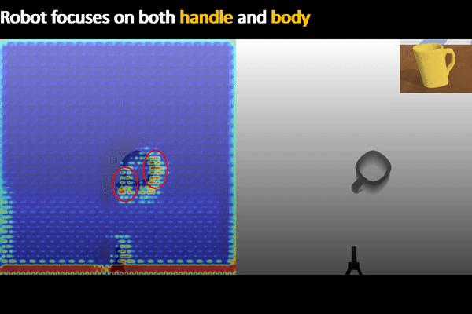

Ising Model States


Learning from Ambiguous Demonstrations with Self-Explanation Guided Reinforcement Learning

Arizona State University
https://github.com/YantianZha/SERLfD
Robot Task Learning


How to convey the task knowledge to robots?
How to convey the task knowledge to robots?
 Convey the task via (demonstrations)
Convey the task via (demonstrations)
Learning from Demonstrations (LfD)

Affordance-Aware Imitation Learning, Zha et al., IROS, 2022

Coarse-to-Fine Imitation Learning, Edward Johns, ICRA, 2021

One-Shot Imitation Learning, Yu et al., RSS, 2018
✅ Demonstrations provide a robust learning signal, contributing to sample-efficient learning
✅ Demonstrations provide a robust learning signal, contributing to sample-efficient learning

❌ exploration in sparse reward and long-horizon
Scalable
Skill
Learning